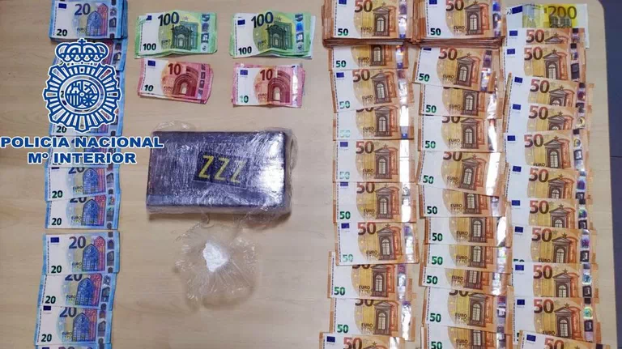
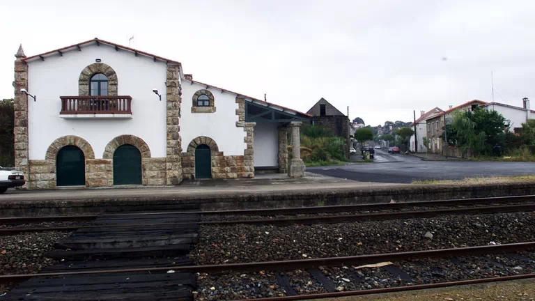
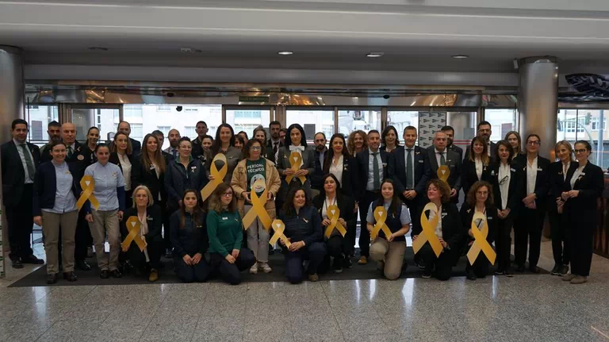

Novas
Detidos en Santiago dous individuos con un kilo de cocaína

A Policía Nacional detivo a dous individuos e incautoulles 1.000 gramos de cocaína, dos que sairían 40.000 dosis por un valor de mercado de máis de 50.000 euros. Serán acusados dun presunto delito contra a saúde pública.
A tenda de 5 metros cadrados que acabou conquistando tres cidades
A tenda Sr.Nilsson ocupaba nos seus inicios uns cinco metros cadrados non dos postos da Praza de Abastos de Santiago. Tras amplicar o local, o establecemento xá está presente hoxe en tres cidades e ten unha clientela fiel.
O concello de Santiago aproba o primeiro tramo local da Vía Verde ata Cerceda

A Xunta de Goberno aprobou o proxecto constructivo do primeiro tramo compostelá da Vía Verde Santiago-Cerceda na que faltan por executar 12 kilómetros capitalinos.
Lazos dourados no Corte Inglés en apoio á loita contra o cancro infantil

Co motivo da celebración do Día Mundial Contra o Cancro Infantil, chegou un cargamento de lazos dourados ao Corte Inglés de Santiago.